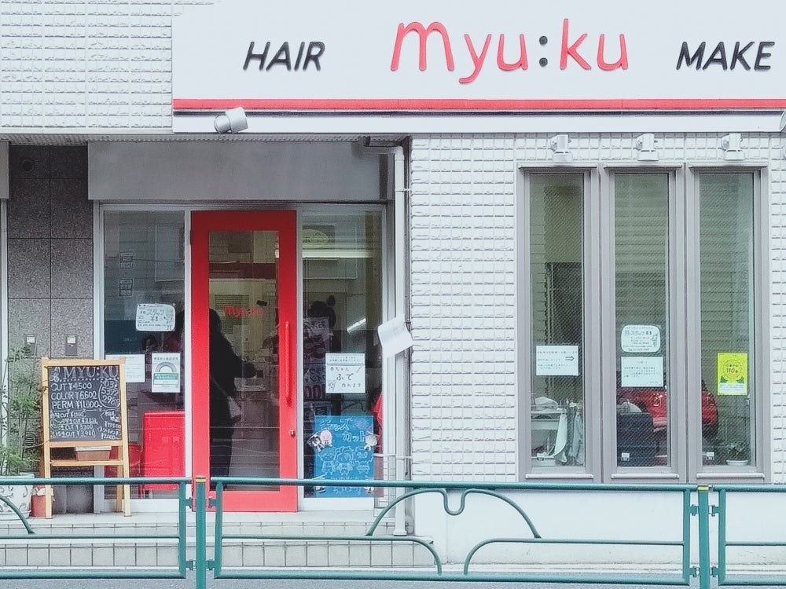
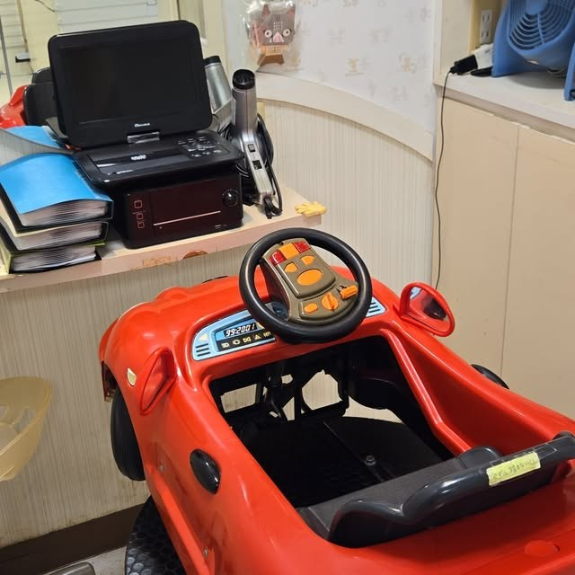
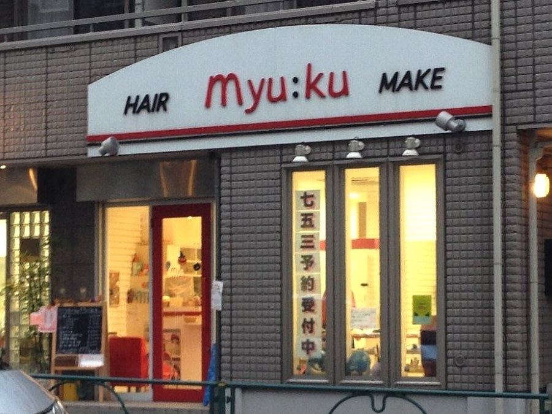
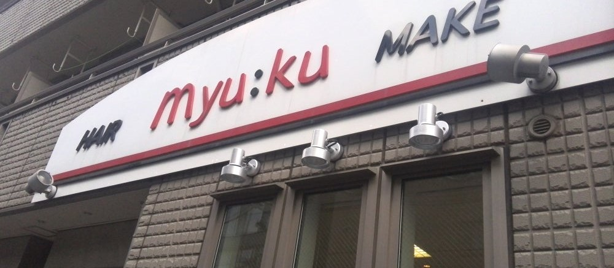

石神井公園駅から歩いて2分。白いタイルに赤い扉の、まちの美容室です。
お子さまは車の形をしたお席に乗ってカットできます。大人の方のカット・カラー・パーマ、七五三や成人式のヘアセットも承っています。

myu:ku（みゅーく）は、石神井公園駅のそばにある美容室です。駅前通り沿いの路面店で、白いタイルの外観に赤い扉と赤いロゴが目印です。
店内には車の形をしたお子さま用のお席があり、DVDを見ながらカットできます。お子さま連れの方にも、ひとりでゆっくり過ごしたい方にも、肩の力を抜いて通っていただける場所でありたいと考えています。ご予約はお電話またはLINEで承ります。


お子さまから大人まで、記念の日のご用意も
キッズカット
赤い車の形をしたお席に乗って、DVDを見ながらカットできます。はじめての散髪で落ち着いていられるか心配な方も、どうぞご相談ください。
誕生記念筆（赤ちゃん筆）
はじめて切った髪で筆をつくることができます。記念に残したい方は、カットのご予約時にお申し付けください。
七五三・成人式
七五三や成人式のヘアセット、着付け、メイクを承っています。日程が決まりましたらお早めにご相談ください。
カット・カラー・パーマ
ふだんのカット、カラー、パーマも承っています。髪質やお手入れにかけられる時間をうかがったうえでご提案します。
※ スタイル写真は公開されているものが確認できなかったため、このページには掲載していません（No Data）。

ご予約・お問い合わせは、
お電話またはLINEで承っております。
土日祝はご予約が埋まりやすいため、キャンセル待ちも承ります。
※本サイトはサンプルのため送信されません。
実際のご予約はお電話にて承ります。